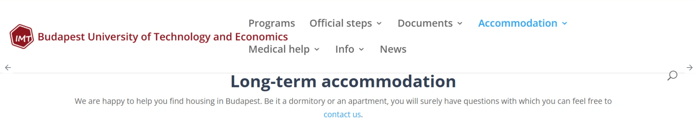
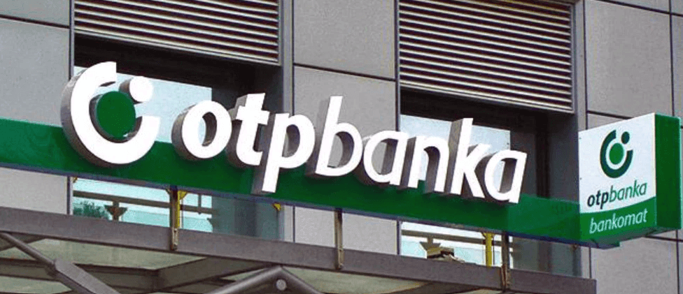

留学のブログはたくさんあるけど、「実際に何を、どの順番で、どう選んだか」を具体的に書いた記事が意外と少ない。
この記事では、私が2024年9月にブダペストに着いてから、生活が回るようになるまでにやったことを、全部そのまま書きます。
私の1つ目の家は、大学のウェブサイト経由で見つけました。

BME の学生向けページに、おすすめの物件サイトがあります。ここから連絡を取って契約したのが最初の家でした。
こちらのサイトです → imt.bme.hu/accommodation
日本人の友人たちは、Facebook のブダペスト学生向けグループで見つけている人が多いです。具体的なグループ名は面談で共有しますが、大学の公式ルート以外にもコミュニティ経由のルートは複数あります。大学サイトとFacebookの両方を並行して探すのが正解。
私の1年目は1部屋に4人で住む選択をしました。狂ってました。安さに釣られると本当にしんどい。多少高くても、1人部屋か、せめて2人ルームまでを勧めます。
結論から言うと、OTP Bank よりも Revolut と Wise を使っています。

OTP Bank はハンガリー最大の銀行で、留学生向けに口座開設ガイドもよく出てくる有名どころ。ただ、留学生の日常使いなら OTP は必須ではないというのが私の意見です。
Revolut、Wise の外貨交換手数料が本当に安いので、日本の親から送金してもらう時とか、大きな金額を動かす時はほぼ Wise 一択。
大学指定の Groupama に入っています。
自力で他社を探す選択肢もありますが、留学初年度は Groupama で十分。慣れてから他を検討すればOKと感じています。
ブダペストで学生がよく行くのは、Spar と Lidl の2つ。私は個人的に圧倒的、Lidl 派です。
食べ物が全体的に安い。同じ牛乳、同じパン、同じ野菜でも、Spar と比べて安いことが多い。1年目、生活費を月2万円で回してた頃はほぼ Lidl オンリーでした。
Spar は駅前など立地が良くて、急ぎの買い物・少量の時に便利。用途で使い分けるのが正解ですが、まとめ買いは Lidl 一択。
私は月額の定期券を使っています。
定期券の学生料金を使うには大学の在学証明が必要。渡航後、学校で発行してもらってから購入する流れになります。
以上をまとめると、私が推奨する順序は：
| タイミング | やること |
|---|---|
| 渡航前 | Revolut・Wise のアカウント作成、住居候補の目星をつける |
| 到着 Day 1 | 住居に到着、鍵の受け取り、生活最低限の買い出し（Spar でも可） |
| Day 2〜3 | Wise で当面の生活費を HUF に交換、Lidl で本格的に食料調達 |
| 入学 Week 1 | Groupama 加入、定期券購入 |
住居や生活は着いてから何とかなるところも多いですが、渡航前の入試突破が一番の関門です。
このあたりは1人ひとり状況が違うので、記事にまとめきれません。Google Meet面談で個別に話します。
同じ立場だった私だからこそ、
あなたの気持ちがわかります。
もっと詳しく聞きたい方へ
具体的な出願準備や住居の選び方の相談は、ハンガリーCS留学支援 の Google Meet相談で。気軽な質問は note / Instagram / Email（contact@hungarycs-support.com）でどうぞ。
同じ立場だった私だからこそ、あなたの気持ちがわかります。
相談メニューを見る